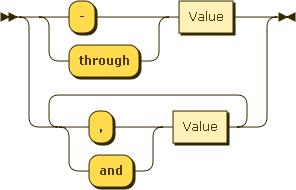

Easily generate valid schedule definitions.
While schedules can always be manually created, it is usually easier to use one of the following parsers that are included with Later. Each of the parsers generates a valid schedule definition that can then be used when calculating occurrences.
later.parse.recur() provides a simple, chainable API for creating schedules. All
valid schedules can be produced using this API.
Important Schedules produced by
recur have additional methods attached so that they can
be chained. While the schedules can be used with other Later functions
directly without a problem, you may want to strip the extra methods
before serializing.
// fires on the 2nd minute every hour
var sched = later.parse.recur().on(2).minute();
// works perfectly
later.schedule(sched).next();
// strip methods before serializing
var s = {schedules: sched.schedules, exceptions: sched.exceptions};
Recur uses the following to specify the various time periods. These time periods are chained after the various ways to specify valid values.
second(); minute(); hour(); time(); dayOfWeek(); dayOfWeekCount(); dayOfMonth(); dayOfYear(); weekOfMonth(); weekOfYear(); month(); year();
Specifies one or more specific vals of a time period. When
used to specify a time, a string indicating the 24-hour time may be
used.
// fires on the 2nd minute every hour
later.parse.recur().on(2).minute();
// fires every day at 8am and 8pm
later.parse.recur().on(8,20).hour();
// fires every day at 8am
later.parse.recur().on('08:00:00').time();
Shorthand for on(min). Specifies the minimum
value of a time period.
// fires on the 0th minute of every hour later.parse.recur().first().minute();
Shorthand for on(max). Specifies the maximum
value of a time period. Useful when specifying the last value on
a time period that has different max values such as days of the month.
// fires on the last day of every month at 5am later.parse.recur().on(5).hour().last().dayOfMonth();
Shorthand for on(1,7).dayOfWeek()
// fires on the 5th minute of every hour during Sat and Sun later.parse.recur().on(5).minute().onWeekend();
Shorthand for on(2,3,4,5,6).dayOfWeek()
// fires on the 5th minute of every hour during Mon,Tues,Wed,Thur,Fri later.parse.recur().on(5).minute().onWeekday();
Specifies an interval val of occurrences of a time
period. By default, intervals start at the minimum value of the time
period and go until the maximum value of the time period.
// fires on the 0th, 10th, 20th, 30th, 40th, and 50th min of every hour later.parse.recur().every(10).minute(); // fires on first second of Jan, Apr, July, Oct later.parse.recur().every(3).month();
Specifies the first valid val after which all values
are considered valid.
// fires on the 55th, 56th, 57th, 58th, and 59th minute
later.parse.recur().after(55).minute();
// fires at 12 noon and 6pm
later.parse.recur().every(6).hour().after('09:00').time();
Specifies the first invalid val before which all values
are considered valid.
// fires on the first second of January and February
later.parse.recur().before(3).month();
// fires at 6am every day
later.parse.recur().every(6).hour().before('09:00').time();
// fires between 9am and 6pm every day
later.parse.recur().after('09:00').time().before('18:00').time();
later.parse.recur().after(9).hour().before(18).hour();
Specifies the starting occurrence val of of a time
period. Must be chained after an every call. Used to
offset values from the default minimum value.
// fires on the 10th, 25th, 40th, and 55th minute of every hour later.parse.recur().every(15).minute().startingOn(10);
Specifies the start and end value of a
time period. Must be chained after an every call.
// fires on the 10th, 25th, 40th minute of every hour later.parse.recur().every(15).minute().between(10,40);
Creates a composite schedule. Can be chained to create multiple composite schedules or composite exception schedules.
// fires every 2 hours on the first day of every month
// and 8:00am and 8:00pm on the last day of every month
var sched = later.parse.recur()
.every(2).hour().first().dayOfMonth()
.and()
.on(8,20).hour().last().dayOfMonth()
Creates an exception schedule.
Can be chained with and to create a composite exception
schedule.
// fires every minute of every hour except on multiples of 2 and 3
var sched = later.parse.recur()
.every().minute()
.except()
.every(2).minute().between(2,59)
.and()
.every(3).minute().between(3,59);
Used to specify a custom time period
using the id of the time period.
// specifying a custom modifier
var sched = later.parse.recur().every(2).customPeriod('pd');;
Used to specify a custom modifier
using the id of the modifier and the desired vals.
// specifying a custom modifier
var sched = later.parse.recur().customModifier('m', 2).month();;
A valid schedule can be generated from any valid Cron expression. For more information on the Cron expression format, see Wikipedia. Currently Cron expressions are the most compact way to describe a schedule, but are slightly less flexible (no direct support for composite or exception schedules) and can be harder to read.
Parses the Cron expression expr and returns a valid schedule that
can be used with Later. If expr contains the seconds component
(optionally appears before the minutes component), then hasSeconds
must be set to true.
// fires at 10:15am every day
var cron1 = later.parse.cron('15 10 ? * *');
// fires every 5 minutes starting at 2pm and ending at 2:55pm, every day
var cron2 = later.parse.cron('0 0/5 14 * * ?', true);
A valid schedule can be generated simple text expressions.
Parses the text expression expr and returns a valid schedule that
can be used with Later.
// fires at 10:15am every day
var text1 = later.parse.text('at 10:15 am');
// fires every 5 minutes every day
var text2 = later.parse.text('every 5 mins');
Tip If there is an error parsing
the text expression, the character position that the error occurred
in will be returned in the error property. If the
expression was parsed correctly, error will be undefined.
var sched = later.parse.text('at 30:15 am');
sched.error
--> 3
A composite schedule combines multiple basic schedules. The keyword
also is used to create the composite, while the
exception keyword starts an exception schedule.
// fires at 10:15am and 5:15pm every day except on Tuesday
later.parse.text('at 10:15 am also at 5:15pm except on Tuesday');
A schedule defines the set of constraints that must be met. Any number of constraints can be added to a single schedule. The following values are valid when defining a constraint.
// fires every Sunday
later.parse.text('on the first day of the week');
// fires on the last day of every month
later.parse.text('on the last day of the month');
// fires every day between the 15th and 20th day every month
later.parse.text('on the 15th through 20th day of the month');
// fires every 5 minutes on Saturday and Sunday
later.parse.text('every 5 mins every weekend');
// fires on the 7th, 27th, and 47th minute every hour
later.parse.text('every 20 mins starting on the 7th min');
// fires every hour after noon every day
later.parse.text('after 12th hour');
// fires every hour before noon every day
later.parse.text('before 12th hour');
// fires at 5:00pm every day
later.parse.text('at 5:00 pm');
// fires at 5:00pm on Wednesday, Thursday, and Friday
later.parse.text('at 5:00 pm on Weds,Thurs and Fri');
// fires at 5:00pm every day of March in 2014
later.parse.text('at 5:00 pm every 1 day of March in 2014');
Ranges are used to specifiy multiple values for a particular constraint.

// fires every day between the 15th and 20th day every month
later.parse.text('on the 15th through 20th day of the month');
// fires at 5:00pm on Wednesday, Thursday, and Friday
later.parse.text('at 5:00 pm on Weds,Thurs and Fri');